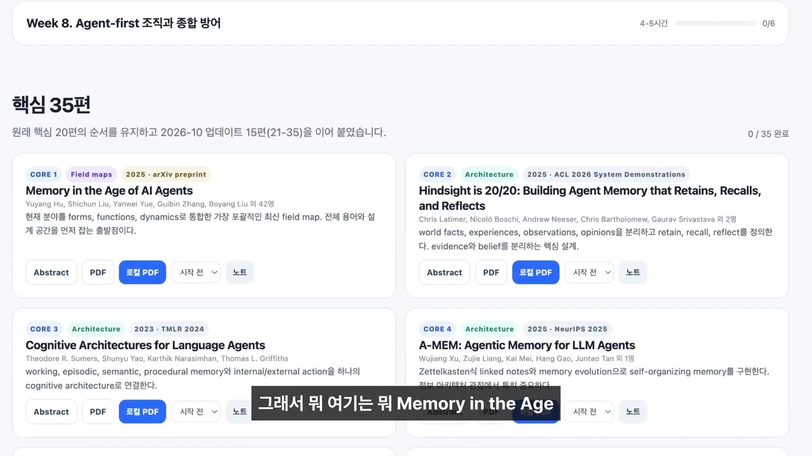
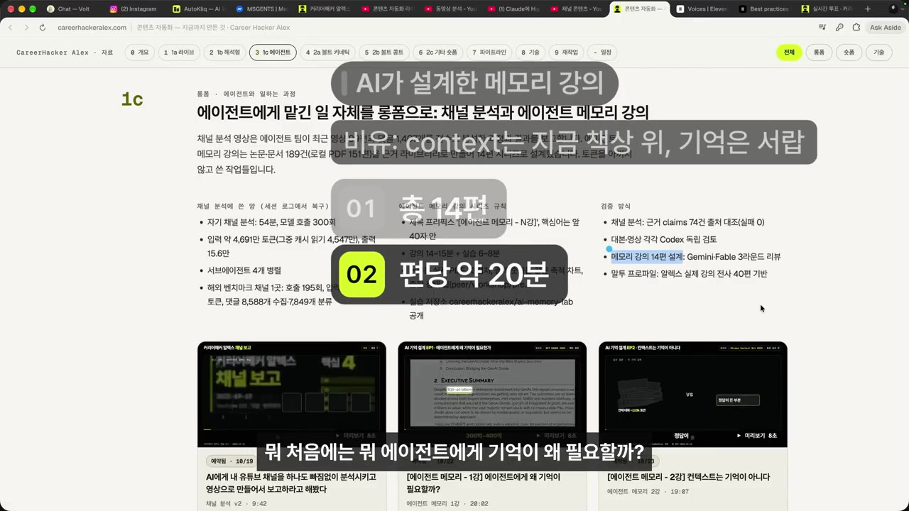
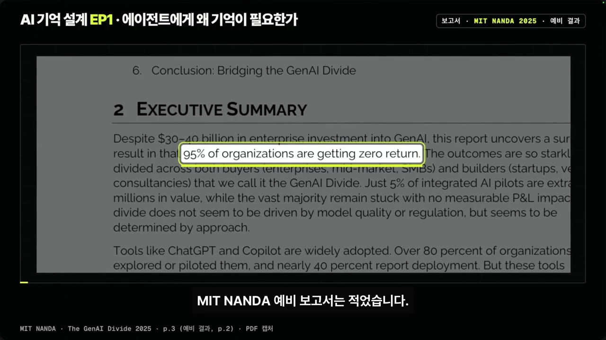
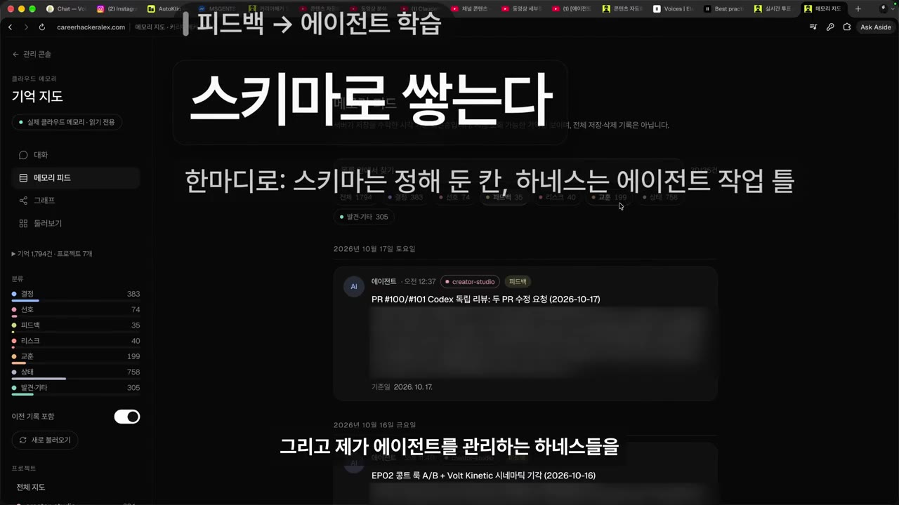
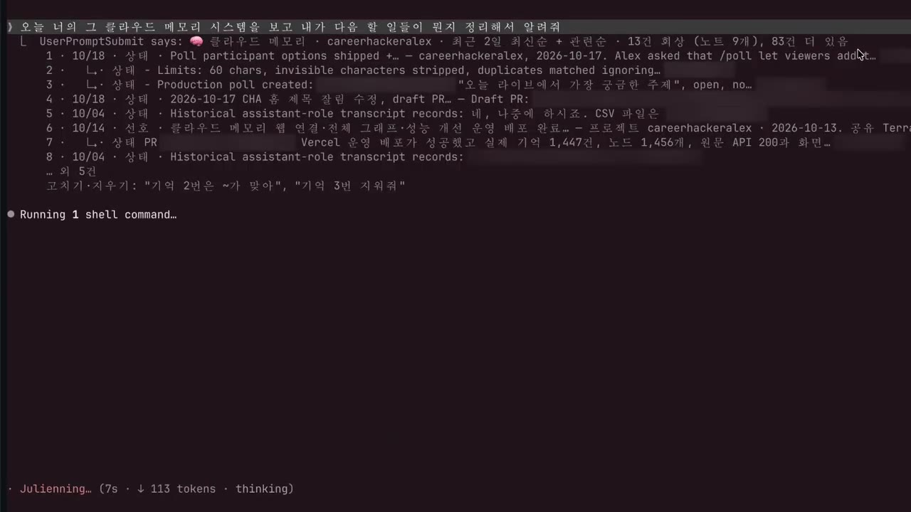

한눈에 보기
- 에이전트에게 '에이전트 메모리' 논문을 모으게 했더니, 읽는 순서까지 붙인 학습 가이드를 만들어 줬다.
- 같은 자료로 강의 콘티를 맡기자 14편(편당 약 20분) 커리큘럼을 짰다. 1강을 들어 본 발표자는 "나보다 낫다"고 평가한다.
- AI는 논문 읽기, 인용, 예시, 차트 제작을 사실상 무한한 노동력으로 해내므로 사람보다 잘할 수밖에 없다는 것이 발표자의 주장이다.
- 사람의 차별점은 현업 경험으로 검수·평가하는 일, 그리고 자기 목소리·생각·경험·시선을 콘텐츠에 담는 일이다.
- 발표자는 강의 내용을 직접 구현한 Second Brain(클라우드 메모리)을 시연한다. 결정·피드백·다음 할 일을 기억에서 꺼내 정리하는 모습이다.
이런 분께 도움이 됩니다
- AI로 강의·교육 콘텐츠를 만들어 보려는 크리에이터와 강사
- 논문이나 공식 문서로 새 분야를 체계적으로 공부하려는 사람
- 에이전트에게 작업 기억(결정·피드백·할 일)을 쌓아 두는 방법이 궁금한 사람
핵심 내용
AI에게 논문 공부와 강의 제작을 맡긴 과정
- 발표자의 연구 주제는 에이전트 메모리(에이전트가 기억하는 방법)이다. Second Brain, Enterprise Brain 같은 '브레인' 이야기가 모두 여기에 속한다.
- 에이전트에게 논문을 대량으로 수집하게 하자, "이 순서대로 읽으면 된다"는 학습 자료를 만들어 줬다. (0:38)
- 목록 예: 「Memory in the age of AI agents」, 「Hindsight is 2020: building agent memory that retains, recalls…」 등 PDF 원문

- 원문을 절반쯤 읽다가 너무 힘들어서 강의로 만드는 방안을 떠올렸다. 논문 읽기, 자료 검증, 본인 리뷰, 커리큘럼까지 끝난 상태였으므로 영상으로 만드는 일만 남았다고 봤다.
- AI에게 강의 콘티를 맡기자 14편, 편당 약 20분 분량으로 설계했다. (1:30)
- 1편: 에이전트에게 기억이 왜 필요할까
- 2편: 에이전트가 말하는 컨텍스트는 기억이 아니다
- 몇 편은 완성했고 지금은 검증하는 중이다. 우선 무료로 공개할 계획이다.
🔁 AI로 논문 기반 강의를 만드는 순서
- 자료 수집
- 원문 읽기·검증
- 커리큘럼 설계
- 강의 제작
- 검수
- 1자료 수집
에이전트가 주제 관련 논문을 모으고 읽는 순서를 붙인 학습 가이드를 만든다 (0:16)
- 2원문 읽기·검증
사람이 원문을 읽고 자료를 검증·리뷰한다
- 3커리큘럼 설계
AI가 14편(편당 약 20분) 강의 콘티를 짠다

AI가 설계한 메모리 강의: 총 14편, 편당 약 20분 · ▶ 1:48 - 4강의 제작
발표자의 강의 자료·목소리 톤·구조를 학습한 AI가 강의를 만든다
- 5검수
사람이 검수자·평가자로서 현업 기준에 맞는지 확인한다
AI가 만든 1강 도입부
- 강의 제목은 "에이전트에게 왜 기억이 필요할까요? — 14편 시리즈의 첫 질문"이다. (3:00)
- 도입부에서 인용한 수치: 기업이 생성형 AI에 300억~400억 달러를 썼지만, 조직의 95%는 수익이 전혀 없다는 MIT 예비 보고서 내용이다(보고서 이름은 자막상 불분명).

- 학습 목표: 에이전트에게 기억이 필요한 이유를 설명하고, 세션이 바뀌어도 기억하는 에이전트를 개인 PC에 띄울 수 있게 된다.
AI가 사람보다 잘할 수밖에 없는 이유
- 발표자는 공을 많이 들여 유료 강의 두 편을 직접 찍었고, 그 강의 자료·목소리 톤·강의 스타일·구조를 모두 AI에게 학습시켰다. AI는 발표자처럼 강의한다.
- 토큰만 있으면 AI의 노동력은 사실상 무한하다. (3:40)
- 논문 전부 읽기, 인용구와 예시 만들기, 시스템을 직접 설계해 써 보고 증명하기, 차트로 정리하기를 모두 할 수 있다.
- 만드는 사람도 AI가 만든 강의를 보며 배운다.
💡 강의 품질 경쟁에서 AI를 이기기는 어렵다 — 남는 질문은 "그럼 나는 무엇으로 차별화하나"다.
사람의 차별점: 검수자·평가자, 그리고 '나'
- 현업 개발 경력이 있으면 무엇이 실제로 되고 안 되는지 안다. 검수 과정에서 그 판단을 강의에 넣으면 차별화가 된다. (2:20)
- 막 찍어내지 않고, 본인이 알고 실제로 해 본 것만 강의로 만든다.
- 결론적으로 차별점은 본인의 목소리, 생각, 경험, 시선, 감정, 사람에 대한 태도다. (7:13)
- 누군가 똑같이 리버스 엔지니어링해 만들 수 있더라도, 제공하는 사람이 '나'가 아니면 가치가 떨어지게 만들겠다는 전략이다.
💡 콘텐츠가 자동화로 넘쳐날수록 '누가 말하느냐'가 차별점이 된다.
강의 내용을 직접 구현한 Second Brain
- 발표자가 만든 에이전트 메모리 시스템(클라우드 메모리)이다. 강의에 나오는 hindsight, recall, retrieve, retain, reflect를 모두 구현했다. 회사에서도 비슷한 일을 하고 있다. (4:36)
- 일하는 에이전트가 이 메모리를 계속 업데이트한다.
- "최근에 내린 결정들을 정리해줘"라고 물으면 결정 목록(무엇을 했는지, 무엇을 아카이브했는지 등)이 나온다.
- 피드백도 쌓아 둔다. 예: "이건 별로", "캡처 없음", "상표 없음" 같은 지적이다(자막상 일부 불분명).
- 이 피드백을 교훈·상태·결정·선호 네 칸의 스키마로 저장해, 에이전트와 에이전트를 관리하는 하네스를 학습시키는 데 쓴다.

- Claude에게 "클라우드 메모리 시스템을 보고 내가 다음에 할 일을 정리해줘"라고 하면, 메모리를 recall·retrieve해서 할 일 목록을 만든다. (5:32)
- 예: 홈 제목 잘림 수정, 폴링 만들기, 클라우드 메모리 웹 연결 등(자막상 일부 불분명)

- 공용 클라우드 메모리 주소가 있으므로 "웹사이트 버그 수정 어디까지 됐지?" 같은 설명을 매번 할 필요가 없다.
- 발표자는 자체 평가에서 기존 서비스 대비 SOTA(현재 최고 수준)와 비슷한 점수를 받았다고 말한다. 구체적인 점수는 영상에 나오지 않는다.
따라 해보기
준비물
- AI 에이전트·챗봇 (영상 시연은 Claude)
- 배우고 싶은 주제 1개와 작업 메모·피드백·회의록 등 내 기록
- 아래 프롬프트는 영상 설명란 '실습 자료'에 실린 것이다(화면 질문 원문과 말로 한 지시를 모았다고 함).
단계별 방법
🔁 논문 → 강의 → 기억 활용 실습 순서
- 학습 가이드 받기
- 원문 읽기
- 커리큘럼 설계
- 한 편 만들기
- 검수
- 기억 꺼내 쓰기
- 1학습 가이드 받기
주제를 주고 핵심 논문·공식 문서 최대 10개와 읽는 순서를 표로 받는다 (프롬프트 1)
- 2원문 읽기
표의 순서대로 원문을 직접 읽는다
- 3커리큘럼 설계
자료 목록만 근거로 편수·분량을 정해 강의 커리큘럼을 짠다 (프롬프트 2)
- 4한 편 만들기
강의 한 편 대본을 만든다(영상에서 구체적 방법은 생략됨)
- 5검수
대본의 사실 주장·숫자를 뽑아 원문과 대조한다 (프롬프트 3)
- 6기억 꺼내 쓰기
내 메모에서 결정·피드백·다음 할 일을 정리한다 (프롬프트 4~6)
1단계에 입력할 내용
○○(배우고 싶은 주제)를 처음부터 공부하려고 해. 핵심 논문과 공식 문서를 최대 10개 골라 표로 정리해 줘.
표: 읽는 순서 / 제목 / 저자·연도 / 한 줄 요약 / 이 순서인 이유
- 실제로 있는지 확신할 수 없는 자료는 지어내지 말고 '미확인'으로 표시해 줘.
- 완료 기준: 입문 → 핵심 → 심화 순서이고, 모든 행에 이 순서인 이유가 한 줄씩 있음.
3단계에 입력할 내용
아래 자료 목록(○○)만 근거로 초보자용 강의 커리큘럼을 ○편으로 짜 줘. 한 편은 약 ○분이야.
편마다: 제목(질문형) / 이 편이 답하는 질문 1개 / 근거 자료 / 끝나면 할 수 있게 되는 것
- 목록에 없는 자료나 사실은 새로 만들지 마. 근거가 부족한 편은 '자료 부족'으로 표시해 줘.
- 완료 기준: 앞 편을 들어야 다음 편이 이해되는 순서이고, 모든 편에 근거 자료가 1개 이상 붙어 있음.
5단계에 입력할 내용
아래 강의 대본(○○)에서 사실 주장과 숫자를 모두 뽑아 표로 만들어 줘.
표: 주장 / 대본에 적힌 출처 / 원문에서 확인할 문장이나 쪽 / 내가 현업 경험으로 답해야 할 질문
- 출처가 없는 주장은 '출처 없음'으로 표시해 줘.
- 대본을 고쳐 쓰지는 마. 맞는지 판단은 내가 할게.
- 완료 기준: 대본의 숫자·인용·사례가 하나도 빠짐없이 표에 들어가 있음.
6단계에 입력할 내용 (결정 → 피드백 → 다음 할 일)
아래 내 작업 메모(○○)에서 '결정'만 골라 최근 순으로 정리해 줘.
표: 날짜 / 결정 / 이유 / 근거가 된 메모 문장(그대로 인용)
- 메모에 없는 결정은 만들지 마. 날짜가 없으면 '날짜 없음'으로 적어 줘.
- 완료 기준: 모든 행에 근거 인용이 있고, 아직 정하지 않은 아이디어나 할 일은 빠져 있음.
아래 피드백 메모(○○)를 다음 작업 때 다시 쓸 수 있게 네 칸으로 나눠 줘: 교훈 / 상태 / 결정 / 선호.
- 각 항목은 한 문장으로 쓰고, 원래 피드백 문장을 근거로 붙여 줘.
- 원문에 없는 규칙은 만들지 마. 애매한 건 '확인 필요'로 표시해 줘.
- 완료 기준: 모든 피드백이 최소 한 칸에 들어가 있고, '다음엔 이렇게'로 쓸 수 있는 선호가 따로 모여 있음.
아래 프로젝트 기록(○○: 최근 메모, 회의록, 할 일 목록)을 보고 내가 다음에 할 일을 정리해 줘.
표: 할 일 / 근거 기록(날짜와 함께 그대로 인용) / 상태(진행 중·막힘·끝남) / 우선순위(상·중·하)
- 기록에 없는 일은 추가하지 마.
- 아무것도 실행하거나 다른 사람에게 보내는 일은 하지 마. 목록만 만들어 줘.
- 완료 기준: 끝난 일은 '끝남'으로 표시되고, 모든 할 일에 근거 기록이 붙어 있음.
따라 할 수 있는지 점검
- ✅ 바로 따라 할 수 있음: 1단계 학습 가이드, 3단계 커리큘럼, 5단계 검수, 6단계 결정·피드백·할 일 정리. 설명란에 프롬프트 원문이 있다.
- ⚠️ 4단계 「한 편 만들기」: 강의 대본·영상을 만드는 프롬프트와 도구(목소리·스타일 학습 방법)가 영상에 나오지 않는다 → 설명란에 있다는 '강의 한 편 틀'을 참고하고, 영상 제작 도구는 따로 골라야 한다.
- ⚠️ 6단계 「기억 꺼내 쓰기」: 영상의 Second Brain(클라우드 메모리)은 발표자가 직접 만든 시스템이고, 구축 방법은 나오지 않는다 → 메모를 프롬프트에 직접 붙여 넣는 방식으로 대신한다. 시스템 자체는 설명란 '커리어해커 세컨드 브레인' 링크를 참고한다.
- ❓ 실습 자료에 있다는 '강의 시리즈 규칙'과 '학습 가이드 짜임새'의 구체 내용은 설명란 본문에 다 나오지 않는다. 별도 자료인지 확인이 필요하다.
확인 방법
- 1단계 표가 입문 → 핵심 → 심화 순서이고, 모든 행에 '이 순서인 이유'가 있다.
- '미확인'으로 표시된 자료는 직접 검색해 실제로 있는지 확인한다.
- 5단계 표에 대본의 숫자·인용이 빠짐없이 들어가 있고, '출처 없음' 항목을 원문과 대조했다.
막히면
- AI가 만든 강의도 공개 전에 사람이 원문과 대조해 검수해야 한다(설명란 주의 문구).
- 막 찍어내지 말고, 내가 알고 실제로 해 본 내용만 강의로 만든다.
기억할 숫자·인용
- 강의 14편, 편당 약 20분
- 1강에서 인용한 수치: 생성형 AI 기업 지출 300억~400억 달러, 조직의 95%는 수익 없음 (MIT 예비 보고서)
- 피드백 저장 스키마: 교훈 · 상태 · 결정 · 선호
- "나보다 낫다고 생각합니다." / "그거를 제공하는 이가 제가 아니면 차별성이 떨어지게끔"
- 이 영상은 2026년 10월 17일 라이브를 편집한 것이다.
생각해볼 점
- (내 의견) 'AI 강의가 나보다 낫다'는 평가는 1강 도입부 약 1분을 근거로 한 것이다. 14편 전체의 정확성은 아직 검증 중이라고 발표자 스스로 말한다.
- (내 의견) 1강이 인용한 'MIT 보고서 95%' 수치는 AI가 대본에 넣은 인용이다. 원문의 정확한 표현과 조사 범위를 직접 확인해야 한다. 검수가 사람의 역할이라는 영상의 주장과도 맞닿는 부분이다.
- (내 의견) Second Brain이 'SOTA에 가깝다'는 말은 자체 평가이고, 점수와 비교 기준은 공개되지 않았다.
바로 해볼 일
- 공부하고 싶은 주제 하나를 정해 프롬프트 1로 '읽는 순서가 붙은 자료 목록'을 받아 보기
- 최근 일주일 작업 메모를 프롬프트 5에 넣어 교훈·상태·결정·선호로 나눠 보기
- 내가 만드는 콘텐츠에서 AI가 따라 할 수 없는 '내 경험·시선' 한 가지를 적어 보기